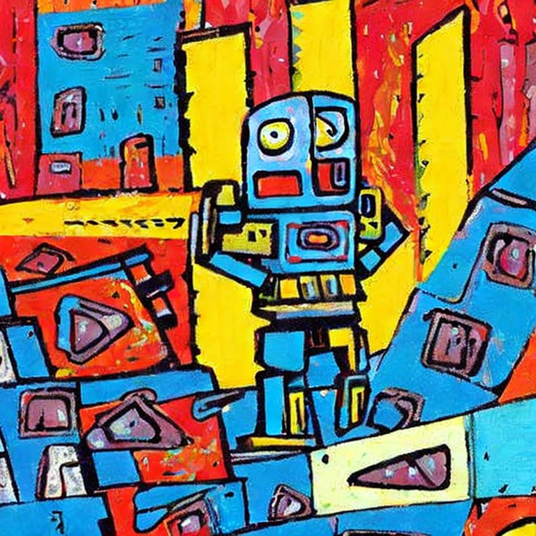
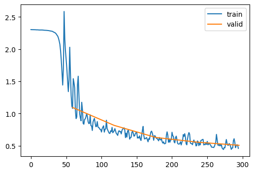

import torch
torch.set_printoptions(precision=2, linewidth=140, sci_mode=False)
from torcheval.metrics import MulticlassAccuracy
import torch.nn.functional as FMiniAI Utilities
MiniAI Utilities

I have been taking Part 2 of FastAI courses, which covers matrix multiplication to stable diffusion. In the course, we built MiniAI from scratch. MiniAI is a small and flexible library that makes building AI tools very easy. I am almost done with the course, and I want to share some utility functions I have built on top of MiniAI. These are very useful to me, and I hope you find it that way as well. Here’s a code for this notebook.
Some additional functionalities added to miniai. - When training models, output time along with loss and metrics. - Get data from pytorch datasets. - Plot weight statistics after fit using ActivationStats. - MyNorm is a mixture of LayerNorm’s simplicity and Batchnorm’s way of taking means/stds.
Import libraries
Let’s import some libraries first. Cells that start with #|export are exported using nbdev, which turns jupyter notebook into python script.
get_dls
In FastAI’s course22 part 2, we use Fashion MNIST datasets from Hugging Face. Hugging Face datasets store images with PyArrow, and we have to convert them into tensors each batch for training. Therefore, we could use get_dls to create DataLoaders from Pytorch datasets.
dls = get_dls()
xb, yb = next(iter(dls.train))
xb.shape, yb(torch.Size([1024, 1, 28, 28]), tensor([5, 7, 4, ..., 8, 0, 3]))format_time
This is a function from fastprogress. It converts seconds to mm:ss and h:mm:ss if there is an hour.
format_time(3)'00:03'It truncates all the decimals.
format_time(3.999)'00:03'format_time(65)'01:05'format_time(4888)'1:21:28'MetricsCB
We encountered MetricsCB in 09_learner.ipynb notebook. This callback computes loss and metric functions. After epoch, it logs current epoch, whether in training or not, loss and metric values.
I thought it would be useful to also add time into the callback, so I used format_time for that.
Let’s take a look at an example.
def conv(ni, nf, ks=3, act=True):
res = nn.Conv2d(ni, nf, stride=2, kernel_size=ks, padding=ks//2)
if act: res = nn.Sequential(res, nn.ReLU())
return res
def cnn_layers():
return [
conv(1 ,8, ks=5), #14x14
conv(8 ,16), #7x7
conv(16,32), #4x4
conv(32,64), #2x2
conv(64,10, act=False), #1x1
nn.Flatten()]metrics = MetricsCB(accuracy=MulticlassAccuracy())
cbs = [TrainCB(), DeviceCB(), metrics]
learn = Learner(nn.Sequential(*cnn_layers()), dls, F.cross_entropy, lr=0.2, cbs=cbs)
learn.fit(2){'accuracy': '0.298', 'loss': '2.076', 'epoch': 0, 'train': True, 'time': '00:01'}
{'accuracy': '0.370', 'loss': '1.962', 'epoch': 0, 'train': False, 'time': '00:00'}
{'accuracy': '0.636', 'loss': '0.972', 'epoch': 1, 'train': True, 'time': '00:01'}
{'accuracy': '0.740', 'loss': '0.692', 'epoch': 1, 'train': False, 'time': '00:00'}ProgressCB
Let’s take a look at ProgressCB, which we also encountered in 09_learner.ipynb notebook. This callback adds nice progress bar, which we can visualize the progress. It can also plot train and valid losses in different frequencies. When plot is True, update_freq can be batch, epoch, or fit. Since updating each batch is too frequent, I wanted to add some options.
metrics = MetricsCB(accuracy=MulticlassAccuracy())
cbs = [TrainCB(), DeviceCB(), metrics, ProgressCB(plot=True)]
learn = Learner(nn.Sequential(*cnn_layers()), dls, F.cross_entropy, lr=0.2, cbs=cbs)
learn.fit(5)| accuracy | loss | epoch | train | time |
|---|---|---|---|---|
| 0.286 | 2.120 | 0 | True | 00:01 |
| 0.571 | 1.095 | 0 | False | 00:00 |
| 0.663 | 0.907 | 1 | True | 00:01 |
| 0.672 | 0.817 | 1 | False | 00:00 |
| 0.741 | 0.676 | 2 | True | 00:01 |
| 0.763 | 0.629 | 2 | False | 00:00 |
| 0.777 | 0.589 | 3 | True | 00:01 |
| 0.794 | 0.556 | 3 | False | 00:00 |
| 0.804 | 0.522 | 4 | True | 00:01 |
| 0.805 | 0.507 | 4 | False | 00:00 |

ActivationStats
I only added after_fit to ActivationStats, which simply plots parameter statistics after fitting. It just saves typing.
MyNorm
MyNorm is a normalization technique which combines the simplicity of LayerNorm and calculation of mean and standard deviation like BatchNorm. Normalization techniquea re covered in (11_initializing.ipynb)[https://github.com/galopyz/course22p2/blob/master/nbs/11_initializing.ipynb] I tested on 14_augment.ipynb notebook, and MyNorm performs as good as nn.BatchNorm2d. In 14_augment-Copy1, I used BatchNorm, LayerNorm, and MyNorm without momentum. In 14_augment-Copy2, I used MyNorm with momentum. In these notebooks, total time spent is not very accurate. Simply adding time for each epochs gave me much higher value.
This MyNorm has momentum like BatchNorm. It does not necessarily train better than one without momentum. If we do a momentum with 1, it is same as having no momentum.
Conclusion
We looked at some utility functions, and I found them to be very useful when I was studying the course. For instance, finding out roughly how long it took to train an epoch was helpful. MyNorm was fun to try out in different models. I found out that when training for 50 epochs with data augmentation, it really didn’t matter which normalization technique I used. They were about the same. Therefore, it was better to use optimized Pytorch’s nn.BatchNorm2d for speed. I hope you found these useful as well.